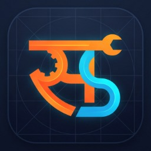
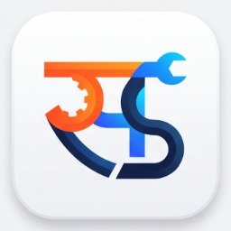
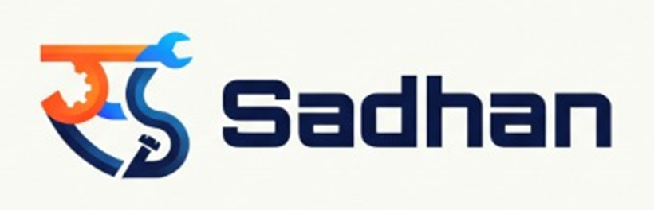

Calculator
Real expressions, parentheses and percentages. Keep it open beside another tool.

SADHAN. SourceAN EVERYDAY TOOLBOX FOR ANDROID
27 everyday tools. Seven original retro games.
One glass workspace, with tabs that live only in memory.

SADHAN⚙साधन / saa-dhun /
An instrument. A tool.
Nothing more than you need.
A PLACE FOR THE LITTLE THINGS
Six in-memory tool tabs. Light, Dark or System.
Companion panes for tablets and foldables.
Showing all 34 tools and games
Real expressions, parentheses and percentages. Keep it open beside another tool.
The bill, the tip, everyone’s share. Dinner maths, sorted.
Monthly payments, total interest, and what you’ll actually pay.
Exact age in years, months, and days. Or count the days between.
Length, weight, temperature, data, area, and speed. Six kinds of measure.
Find a percentage, a share, or the change between two values.
The discount, savings, tax after discount and final price. No checkout surprises.
Turn text into a QR code. Save or share it, entirely on your phone.
Point, decode, copy. Open a web link only when you choose.
Count words. Change case. Trim the edges. Remove duplicate lines.
Keep a thought in an open tab. Close the tab to erase it. No notes history.
Shrink a photo locally. Choose JPEG quality, then save or share.
Pick from a list, draw a whole number, or roll a six-sided die.
Secure on-device randomness with chosen character types. Never saved or sent.
Start, pause, and catch a lap. Every split second, in this session.
Turn the needle, not a number pad. A foreground timer with quick presets.
Ten cities. Live local time. No more counting time zones in your head.
Find a city, see the forecast. Open-Meteo data, no location permission.
15 currencies, dated reference rates. AED uses a labelled USD-peg estimate.
Search official results, select a video and watch its official embed. No API key.
Eight session-only HTTPS tabs. Cookies/storage restrictions and cleanup; private is not anonymous.
A little light, right when you need it. Off when you leave.
Magnetic north and a rotating dial. Uses your phone’s sensors.
Find your balance with a live bubble and X/Y tilt readings.
Local library, queues, repeat, shuffle, speed and seeking. Music can accompany other tool tabs.
Audio/subtitle tracks, external subtitles, ratio, speed, volume and fullscreen. Powered by Media3.
Page, zoom, pan, and preload a chosen document folder. Other formats open in an installed viewer.
Swipe or use the D-pad. Eat, grow, and avoid the walls and yourself.
Draw-one Klondike with foundations, alternating tableau sequences and undo.
Pass-and-play with legal moves, castling, en passant, promotion and draw rules.
An original jump-and-run. Cross gaps, collect stars, and reach the flag.
Three lanes, increasing speed, and oncoming traffic. A pocket 2D racer.
Thirty seconds of precise taps, with original procedural piano tones.
Original falling-block play: rotate, place, clear rows and climb levels.
Internet tools have individual switches, plus one master off switch. Sensor and media support depend on your device.
A TOOL. NOT A TRADE-OFF.
Your calculator doesn’t need your email.
Your scratchpad doesn’t need a cloud.
No analytics, telemetry, crash SDKs, accounts, or ads added by SADHAN. No server of ours. Just the tools.
Open tabs live in RAM. Switch tools without losing work; close a tab to erase it. Only Settings, including your chosen document folder, persist.
Free to use, inspect, change, and share under MIT. Native Kotlin and Jetpack Compose. No paywalls, subscriptions, or AI features.
City queries go to Open-Meteo; rates come from Frankfurter; updates come from GitHub. Browser sites and YouTube make their own requests and may show ads or track visitors. Private browsing is not anonymity or forensic erasure. Every online feature has an off switch.
Get the latest release directly from our GitHub repository. Android 10 or later required.
Open the file. If prompted, allow installs from your browser or file manager. You can switch that permission off afterward.
No setup, no account. Future releases use the same signing key, and optional in-app update checks let you know when one is ready.
THE SMALL PRINT, IN PLAIN WORDS
All seven games and most tools work on your phone. Weather, currency, YouTube, browsing and update checks need Internet. Manual media picking needs no library permission. Optional scans request media access; documents use a chosen folder, not unrestricted all-files access.
GitHub Releases is our distribution channel. It keeps downloads, release notes, and source in one place. Always download from Unigalactix/SADHAN, not an unofficial mirror.
Only while their tab is open in this process. Up to six workspace tabs retain work in RAM; closing a tab erases it. No queues, scores, notes, tabs or recent-file lists are restored from disk. Settings and explicitly exported files are separate.
Music and timers are foreground-only; no background service or alarm is scheduled. Media3 is not full VLC codec/DVD/network parity. PDFs must be local, seekable and not password-protected. Currency rates are indicative. YouTube and the private browser are beta; browser cookies/logins and downloads are restricted. WebView/Android may retain operational data. Games use original assets and have no online play or saved scores.

Free. Open source. Uncomplicated.